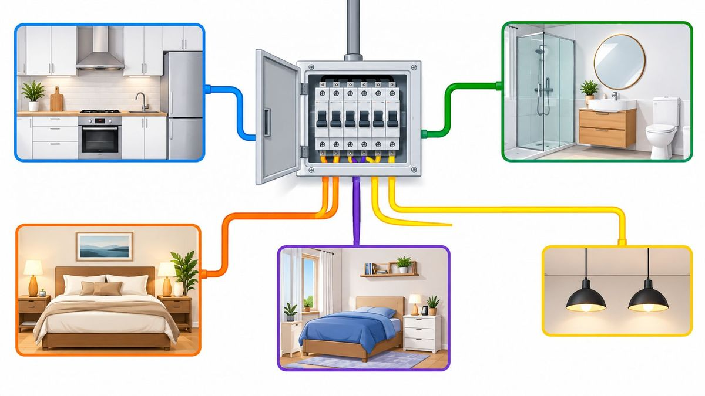

в 2026 году монтаж одной точки (розетка, выключатель, вывод) стоит 800–1 500 руб., щит на 12–18 модулей с автоматами — 15 000–45 000 руб., кабель 3×2,5 мм² — 90–140 руб./м. Двушка 60 м² требует 60–80 точек: электрика под ключ обходится в 120 000–260 000 руб. Экономия на сечении кабеля — самый дорогой вид экономии: переделка скрытой проводки стоит как весь монтаж заново.
Из чего складывается смета
| Раздел | Доля в смете | Стоимость |
|---|---|---|
| Штробление и монтаж | 40–50 % | 50 000–120 000 руб. |
| Кабель и гофра | 15–20 % | 20 000–45 000 руб. |
| Щит, автоматы, УЗО | 15–20 % | 15 000–45 000 руб. |
| Розетки, выключатели, подрозетники | 10–15 % | 12 000–35 000 руб. |
| Проект и согласование | 3–5 % | 5 000–15 000 руб. |
Штробление — самая дорогая операция: 400–700 руб./п.м в бетоне и 250–450 руб./п.м в кирпиче. В панельном доме стены несущие, штробить горизонтально нельзя — только вертикально, иначе смета вырастает на 20–30 % из-за обходных трасс.
Расценки на точки
| Работа | Цена | Комментарий |
|---|---|---|
| Установка подрозетника | 250–450 руб. | с штроблением — до 700 руб. |
| Монтаж розетки | 350–600 руб. | без материала |
| Монтаж выключателя | 350–600 руб. | проходной — +200 руб. |
| Вывод под светильник | 500–900 руб. | с потолка или стены |
| Штробление | 250–700 руб./п.м | зависит от материала стены |
| Прокладка кабеля | 80–150 руб./п.м | в гофре или трубе |
| Сборка щита | 8 000–25 000 руб. | по схеме, с маркировкой |
Точка «под ключ» (штроба, подрозетник, кабель, установка) выходит 2 500–4 500 руб. Если в смете точка стоит 800 руб., уточняйте: скорее всего, штробление и кабель считаются отдельно.
Кабель и автоматы

| Линия | Сечение | Автомат | Цена кабеля |
|---|---|---|---|
| Розетки комнат | 3×2,5 мм² | 16 А | 90–140 руб./м |
| Кухня (плита, варочная) | 3×6 мм² | 32 А | 220–320 руб./м |
| Свет | 3×1,5 мм² | 10 А | 55–90 руб./м |
| Ванная, стиральная машина | 3×2,5 мм² | 16 А + УЗО 10 мА | 90–140 руб./м |
| Кондиционер | 3×2,5 мм² | 16 А | 90–140 руб./м |
Медь, только ВВГнг-LS или NYM. Алюминий в квартирной проводке запрещён ПУЭ 7. На вводе ставят УЗО 30 мА, на влажные зоны — 10 мА. Автомат подбирают по сечению: 2,5 мм² — 16 А, 6 мм² — 32 А.
Щит: сколько модулей и что внутри
| Квартира | Модулей | Состав | Цена |
|---|---|---|---|
| Студия, 1 линия | 8–12 | вводной, 4–6 автоматов, УЗО | 8 000–18 000 руб. |
| Однушка | 12–18 | вводной, 8–10 автоматов, 2 УЗО | 15 000–30 000 руб. |
| Двушка | 18–24 | вводной, 12–14 автоматов, 3 УЗО, реле напряжения | 25 000–45 000 руб. |
| Трёшка | 24–36 | вводной, 16–20 автоматов, 4 УЗО, реле, гребёнка | 35 000–70 000 руб. |
Реле напряжения (3 000–8 000 руб.) защищает технику от скачков в сети — при обрыве нуля в стояке напряжение поднимается до 380 В и выгорает всё, что включено. В панельных домах старше 1990 года реле ставят обязательно.
Смета квартиры 60 м²
| Позиция | Объём | Стоимость |
|---|---|---|
| Точки: розетки, выключатели, выводы | 70 шт. | 56 000–105 000 руб. |
| Штробление | 90 п.м | 22 500–63 000 руб. |
| Кабель | 450 м | 40 000–63 000 руб. |
| Щит с автоматами | 18–24 модуля | 25 000–45 000 руб. |
| Розетки, выключатели, подрозетники | 70 компл. | 14 000–35 000 руб. |
| Проект и схема | — | 5 000–15 000 руб. |
Итого 162 500–326 000 руб. под ключ с материалами. Без штробления (проводка в кабель-каналах или по потолку под натяжным) смета падает до 120 000–200 000 руб., но вид проводки в интерьере хуже.
Что влияет на цену
| Фактор | Влияние |
|---|---|
| Бетонные стены вместо кирпича | +30–50 % на штробление |
| Замена вводного кабеля от щитовой | +15 000–40 000 руб. |
| Умный дом, проходные выключатели | +20–40 % |
| Тёплый пол электрический | +8 000–20 000 руб. за контур |
| Работа без проекта «по месту» | −10 %, но риск переделок |
Самый частый источник перерасхода — правки после штробления: перенос розетки на 30 см стоит 1 500–3 000 руб., потому что трассу перекладывают и заново штукатурят.
Экономия без риска
- Не экономить на сечении: 2,5 мм² на розетки и 6 мм² на плиту — минимум.
- Брать кабель одной партией и проверять маркировку на метраже.
- Считать точки по мебели: розетки за шкафом — выброшенные деньги.
- Ставить УЗО групповое (одно на 3–4 линии), а не на каждую — экономия 4 000–8 000 руб.
- Заказывать сборку щита у одного мастера с монтажом: дешевле на 15–20 %.
Экономить на реле напряжения и УЗО нельзя: цена ошибки — сгоревшая техника на 100 000–300 000 руб. или удар током в ванной.
Порядок работ
- Составить схему точек по плану мебели и техники.
- Рассчитать линии и сечения, собрать спецификацию кабеля.
- Разметить трассы и точки на стенах, согласовать с заказчиком.
- Проштробить стены, установить подрозетники.
- Проложить кабель в гофре, закрепить, оставить запас 150–200 мм.
- Собрать щит, подключить линии, промаркировать.
- Прозвонить линии, замерить сопротивление изоляции, сфотографировать трассы до штукатурки.
Ошибки и их цена
| Ошибка | Последствие | Исправление |
|---|---|---|
| Кабель 3×1,5 на розетки | нагрев, оплавление | перекладка 40 000–63 000 руб. |
| Нет УЗО в ванной | риск поражения током | доп. монтаж 3 000–8 000 руб. |
| Скрутки вместо клемм | нагрев, возгорание | переборка соединений |
| Нет фото трасс до штукатурки | попадание в кабель при сверлении | ремонт 5 000–20 000 руб. |
Чек-лист перед заказом
- Схема точек привязана к мебели и технике, а не «на глаз».
- Сечения: 2,5 мм² розетки, 6 мм² плита, 1,5 мм² свет.
- УЗО 30 мА на вводе и 10 мА на влажные зоны.
- Реле напряжения в щите.
- В смете отдельно: штробление, кабель, щит, фурнитура.
- Фото всех трасс до штукатурки сохранены.
Частые вопросы
Сколько стоит электрика в двухкомнатной квартире?
162 500–326 000 руб. под ключ с материалами при 70 точках. Без штробления — 120 000–200 000 руб.
Сколько стоит одна розетка под ключ?
2 500–4 500 руб.: штроба, подрозетник, кабель, установка. Отдельно монтаж розетки — 350–600 руб.
Можно ли штробить несущие стены?
Только вертикально и на глубину до 25 мм, горизонтальные штробы в несущих панелях запрещены. В кирпичных перегородках ограничений меньше.
Нужен ли проект электрики?
Для квартиры с 60+ точками — да: 5 000–15 000 руб. экономят переделки на 30 000–60 000 руб. и дают схему для будущего ремонта.
Сколько стоит заменить щит?
15 000–45 000 руб. с автоматами для двушки. Замена вводного кабеля от щитовой — ещё 15 000–40 000 руб.
Что дешевле — скрытая или открытая проводка?
Открытая в кабель-каналах дешевле на 30–40 %, но выглядит хуже и собирает пыль. В квартире обычно выбирают скрытую.